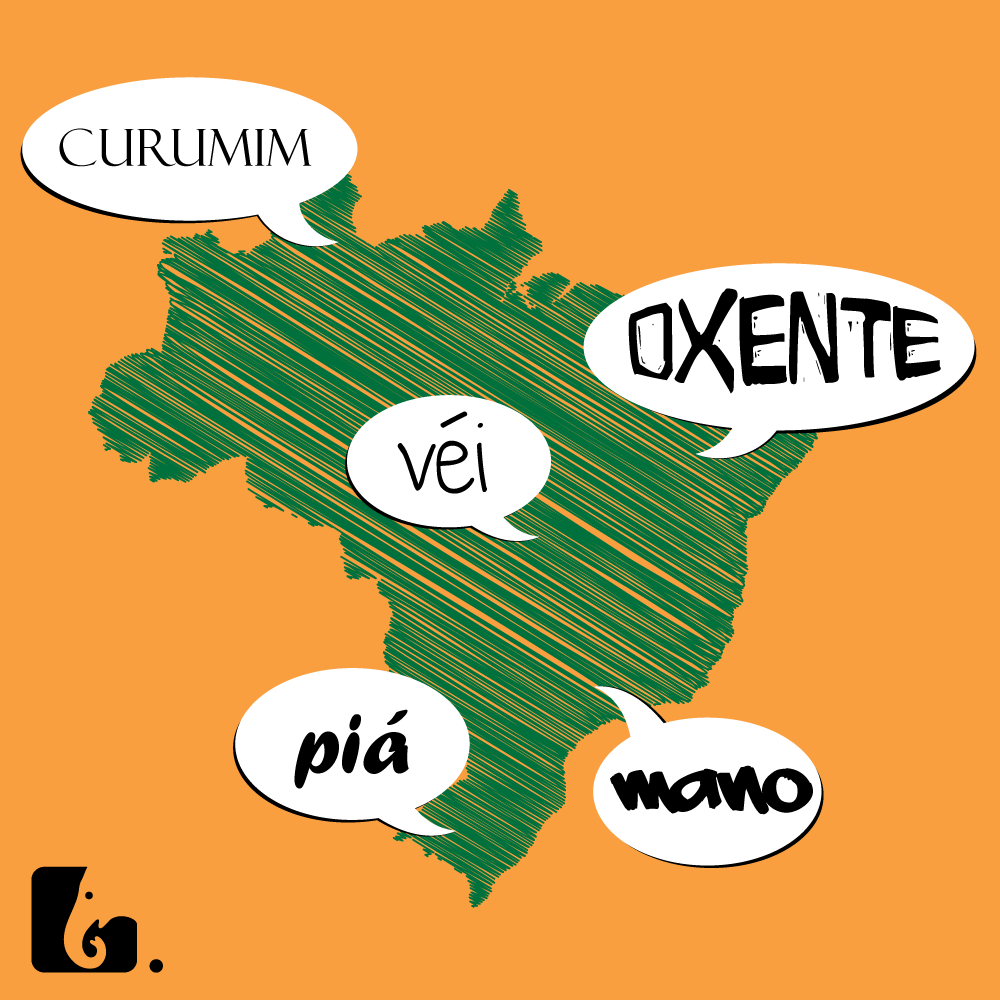

Preconceito Linguístico: Julgando Pelas Palavras
Na obra "preconceito linguístico": o que é, como se faz (1999), o professor, linguista Marcos Bagno explora vários aspectos da linguagem e seu preconceito e seu impacto social, o livro é dividido em quatro capítulos. (DIANA, 200?).
Segundo ele, não existe uma forma "certa" ou "errada" de usar a língua, e o preconceito linguístico surge da ideia de que existe apenas uma língua correta (baseada na gramática canônica), o que anda de mãos dadas com a prática de exclusão social. (DIANA, 200?).
No entanto, devemos lembrar que a linguagem é fluida e se adapta ao longo do tempo de acordo com o comportamento dos falantes. (DIANA, 200?)
Além disso, as regras linguísticas determinadas pela gramática canônica excluem expressões populares e variantes linguísticas como gírias, regionalismos, dialetos, etc. (DIANA, 200?).
ONo primeiro capítulo deste livro, "Mitos do preconceito linguístico", ele analisa oito mitos muito pertinentes sobre o preconceito linguístico, a saber: Mito n° 1 “A língua portuguesa falada no Brasil apresenta uma unidade surpreendente”: o autor aborda sobre a unidade linguística e as variações que existem dentro do território brasileiro. (BAGNO, 2002).
Mito n° 2 “Brasileiro não sabe português” / “Só em Portugal se fala bem português”: apresenta as diferenças entre o português falado no Brasil e em Portugal, este último considerado superior e mais “correto”. (BAGNO, 2002).
Brasil é muito conhecido pelo preconceito linguístico, pois muitas pessoas acreditam que sua maneira de falar é superior à de outros grupos. (DIANA, 200?).
Isso acontece principalmente entre diferentes partes do país, por exemplo, um sulista acha que seu jeito de falar é melhor do que alguém que mora no norte do país. (DIANA, 200?). Em primeiro lugar, devemos salientar que o nosso país é continental e apesar de todos falarmos português, tem algumas diferenças e peculiaridades regionais. De um modo geral, quem mora na capital acha seu jeito de falar melhor do que quem mora no interior ou mesmo no interior. (SILVA, 2019).
Nesse caso, muitas palavras pejorativas e pejorativas são utilizadas para designar algumas dessas pessoas por meio de um estereótipo associado a variedades linguísticas, como caipira, baiano, nordestino, roceiro e outros. (DIANA, 200?).
É importante ressaltar que o viés linguístico ocorre em conteúdos obscenos e pode gerar diversos tipos de violência (física, verbal, psicológica). Pessoas com viés de linguagem geralmente enfrentam problemas sociais e até mesmo barreiras psicológicas. (ORSI,2011).
Esse tipo de preconceito atinge muitos grupos considerados de menor prestígio social, onde a língua é utilizada como ferramenta de distinção social. "O léxico de uma língua permite que nele se entre veja o modo como a comunidade vê o mundo que a circunda, em seus diferentes aspectos. Assim, por meio do seu estudo podemos ter uma ideia dos preconceitos que permeiam a sociedade. O objetivo deste trabalho é apresentar reflexões e teorizações referentes aos itens léxicos obscenos e aos tabus linguísticos a eles subjacentes e abordar o preconceito linguístico." (BAGNO, 2002).
REFERÊNCIAS
BAGNO, Marcos. Preconceito linguístico: o que é, como se faz. 15 ed. Loyola: São Paulo, 2002. Acesso em: 8 Abr. 2023.
DIANA, Daniela. Preconceito Linguístico. Toda Matéria, [s.d.]. Disponível em: https://www.todamateria.com.br/preconceito-linguistico/. Acesso em: 8 Abr. 2023.
ORSI, Vivian. Tabu e preconceito linguístico. Revista Virtual de Estudos da Linguagem, v. 9, n. 17, p. 334-348, 2011. Disponível em: http://hdl.handle.net/11449/122427. Acesso em: 7 Abr. 2023.
SILVA, A. J. B. da. Português de arremedo: um lado do preconceito linguístico no Brasil. Cadernos de Estudos Linguísticos, Campinas, SP, v. 61, p. 1–19, 2019. DOI: 10.20396/cel.v61i1.8653608. Disponível em: https://periodicos.sbu.unicamp.br/ojs/index.php/cel/article/view/8653608. Acesso em: 8 Abr. 2023.